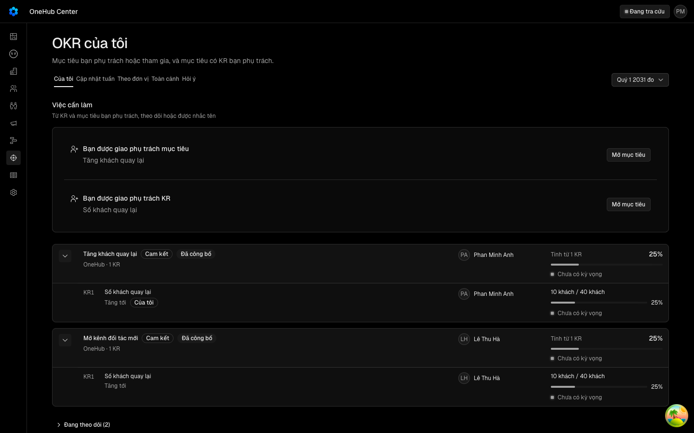
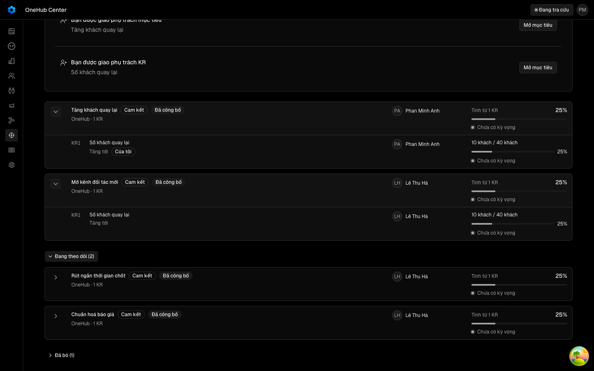
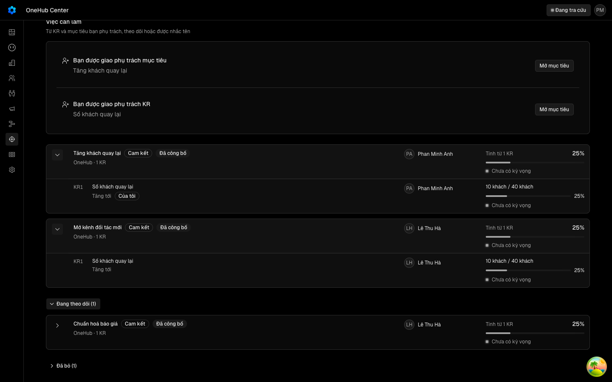
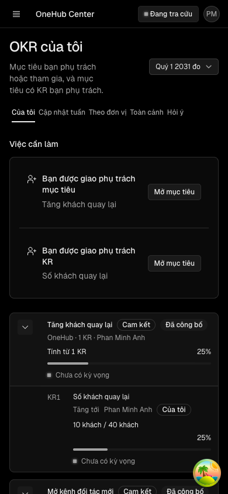
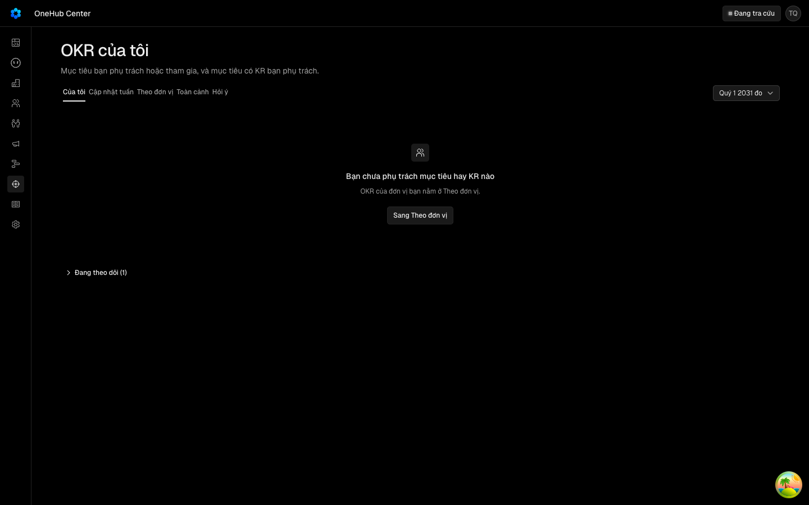

Tách «Đang theo dõi» khỏi tab «Của tôi» của OKR
Các eval
| Eval | Tiêu chí | Loại | Verdict | run_id | verified_at |
|---|---|---|---|---|---|
| E1 | AC-1 | test | PASS | minted-okr-cua-toi-tach-theo-doi-E1-r1 | 2026-10-07T10:53:25Z |
| E2 | AC-1 | test | PASS | minted-okr-cua-toi-tach-theo-doi-E2-r2 | 2026-10-07T11:19:01Z |
| E3 | AC-2 | test | PASS | minted-okr-cua-toi-tach-theo-doi-E3-r2 | 2026-10-07T11:19:01Z |
| E4 | AC-3 | test | PASS | minted-okr-cua-toi-tach-theo-doi-E4-r2 | 2026-10-07T11:19:01Z |
| E5 | AC-4 | test | PASS | minted-okr-cua-toi-tach-theo-doi-E5-r2 | 2026-10-07T11:19:01Z |
| E6 | AC-9 | test | PASS | minted-okr-cua-toi-tach-theo-doi-E6-r2 | 2026-10-07T11:19:01Z |
| E7 | AC-5 | test | PASS | minted-okr-cua-toi-tach-theo-doi-E7-r1 | 2026-10-07T10:53:25Z |
| E8 | AC-6 | test | PASS | minted-okr-cua-toi-tach-theo-doi-E8-r1 | 2026-10-07T10:53:25Z |
| E9 | AC-7 | test | PASS | minted-okr-cua-toi-tach-theo-doi-E9-r1 | 2026-10-07T10:53:25Z |
| E10 | AC-8 | test | PASS | minted-okr-cua-toi-tach-theo-doi-E10-r1 | 2026-10-07T10:53:25Z |
| E11 | AC-5 | ui-check | PASS | minted-okr-cua-toi-tach-theo-doi-E11-r1 | 2026-10-07T10:53:25Z |
| E12 | AC-9 | ui-check | PASS | E12-20261007-1 | 2026-10-07T11:19:01Z |
| E13 | AC-6 | ui-check | PASS | minted-okr-cua-toi-tach-theo-doi-E13-r1 | 2026-10-07T10:53:25Z |
| E14 | AC-5 | script | PASS | design-gate-7e479c8939 | 2026-10-07T10:53:25Z |
| E15 | AC-1 | script | PASS | minted-okr-cua-toi-tach-theo-doi-E15-r2 | 2026-10-07T11:19:01Z |
Chi tiết từng eval
PASS E1 · test
AC-1: Given chu kỳ C có sáu mục tiêu chưa bỏ, mỗi cái nối người dùng U bằng đúng một quan hệ — U phụ trách; mục tiêu cá nhân của U do người khác phụ trách; U tham gia; U phụ trách một KR; U chỉ theo dõi; không quan hệ nào —, When U gọi `okr.mine({ cycleId: C })`, Then `objectives` có đúng bốn mục tiêu của bốn quan hệ đầu, `dangTheoDoi` có đúng mục tiêu U chỉ theo dõi, và mục tiêu không quan hệ không có ở mảng nào.
PASS E2 · test
AC-1: Given chu kỳ C có sáu mục tiêu chưa bỏ, mỗi cái nối người dùng U bằng đúng một quan hệ — U phụ trách; mục tiêu cá nhân của U do người khác phụ trách; U tham gia; U phụ trách một KR; U chỉ theo dõi; không quan hệ nào —, When U gọi `okr.mine({ cycleId: C })`, Then `objectives` có đúng bốn mục tiêu của bốn quan hệ đầu, `dangTheoDoi` có đúng mục tiêu U chỉ theo dõi, và mục tiêu không quan hệ không có ở mảng nào.
bun test okr-cua-toi-theo-doi.spec.ts -t mine-vai: 1 lan chay, 1 dat test-run: dropped crm_muy0m4m9ji1j_test __EXIT=0
PASS E3 · test
AC-2: Given bốn mục tiêu chưa bỏ, mỗi cái nối U bằng một trong bốn quan hệ «của tôi» ở AC-1 VÀ U cũng theo dõi, When U gọi `okr.mine`, Then cả bốn ở `objectives` và không cái nào ở `dangTheoDoi`.
bun test okr-cua-toi-theo-doi.spec.ts -t trung-vai: 1 lan chay, 1 dat test-run: dropped crm_muy0m4nbsox3_test __EXIT=0
PASS E4 · test
AC-3: Given bốn mục tiêu đã bỏ nối U bằng bốn quan hệ «của tôi» và một mục tiêu đã bỏ U chỉ theo dõi, When U gọi `okr.mine`, Then `daBo` có đúng bốn mục tiêu đầu, và mục tiêu chỉ-theo-dõi đã bỏ không có ở `objectives`, `daBo` hay `dangTheoDoi`.
bun test okr-cua-toi-theo-doi.spec.ts -t da-bo: 1 lan chay, 1 dat test-run: dropped crm_muy0m4vvwkoi_test __EXIT=0
PASS E5 · test
AC-4: Given một mục tiêu U đã theo dõi rồi bị đặt mức hiển thị giới hạn không gồm U, When U gọi `okr.mine`, Then mục tiêu đó không có ở mảng nào; And đối chứng: đặt lại công khai thì nó trở về `dangTheoDoi`.
bun test okr-cua-toi-theo-doi.spec.ts -t hien-thi: 1 lan chay, 1 dat test-run: dropped crm_muy0m56xlj68_test __EXIT=0
PASS E6 · test
AC-9: Given U đang ở Của tôi với một mục tiêu M trong nhóm «Đang theo dõi», When mở nhóm, mở M, bấm «Đang theo dõi» để tắt rồi đóng sheet, Then M không còn trên màn (nhóm biến mất nếu M là cái cuối) mà không cần tải lại trang, và `okr.mine` đọc lại không còn M ở mảng nào; And đối chứng: theo dõi lại M từ «Theo đơn vị» rồi quay về Của tôi thì M trở lại nhóm. (cross-layer)
bun test okr-cua-toi-theo-doi.spec.ts -t bo-theo-doi: 1 lan chay, 1 dat __EXIT=0
PASS E7 · test
AC-5: Given U có mục tiêu của mình và mục tiêu chỉ theo dõi ở chu kỳ đang xem, When mở Mục tiêu › Của tôi, Then bảng chính chỉ có mục tiêu của U; ngay dưới là nút «Đang theo dõi (n)» với n bằng số mục tiêu chỉ-theo-dõi, đóng sẵn, đứng trên «Đã bỏ (m)» khi có; bấm nút thì nhóm mở bảng đúng các mục tiêu đó.
PASS E8 · test
AC-6: Given U không giữ mục tiêu nào nhưng đang theo dõi ít nhất một mục tiêu ở chu kỳ đang xem, When mở Của tôi, Then trạng thái rỗng `ST-cuatoi-rong` vẫn hiện như hôm nay và nút «Đang theo dõi (n)» ở ngay dưới nó.
PASS E9 · test
AC-7: Given U không theo dõi mục tiêu nào ngoài mục tiêu của mình, When mở Của tôi, Then không có nút hay vùng «Đang theo dõi» nào trên màn.
PASS E10 · test
AC-8: Given giao diện tiếng Anh và U có mục tiêu chỉ theo dõi, When mở Của tôi, Then nút nhóm đọc «Following (n)».
PASS E11 · ui-check
AC-5: Given U có mục tiêu của mình và mục tiêu chỉ theo dõi ở chu kỳ đang xem, When mở Mục tiêu › Của tôi, Then bảng chính chỉ có mục tiêu của U; ngay dưới là nút «Đang theo dõi (n)» với n bằng số mục tiêu chỉ-theo-dõi, đóng sẵn, đứng trên «Đã bỏ (m)» khi có; bấm nút thì nhóm mở bảng đúng các mục tiêu đó.





PASS E12 · ui-check
AC-9: Given U đang ở Của tôi với một mục tiêu M trong nhóm «Đang theo dõi», When mở nhóm, mở M, bấm «Đang theo dõi» để tắt rồi đóng sheet, Then M không còn trên màn (nhóm biến mất nếu M là cái cuối) mà không cần tải lại trang, và `okr.mine` đọc lại không còn M ở mảng nào; And đối chứng: theo dõi lại M từ «Theo đơn vị» rồi quay về Của tôi thì M trở lại nhóm. (cross-layer)

man-theo-doi.mjs chay qua tien-de.mjs (phien do rieng kho crm_okr_cua_toi_tach_theo_doi_do, app 4787, api 4169, tu don khi xong) buoc 1..6 deu «dat»; man-theo-doi: dat; phien-do: xong — mã 0 buoc 3: M5 roi man sau khi tat, dau window.__cttDau con nguyen (khong tai lai trang), nut nhom «Đang theo dõi (1)» buoc 4: theo doi lai M5 → nhom «Đang theo dõi (2)» co M5
PASS E13 · ui-check
AC-6: Given U không giữ mục tiêu nào nhưng đang theo dõi ít nhất một mục tiêu ở chu kỳ đang xem, When mở Của tôi, Then trạng thái rỗng `ST-cuatoi-rong` vẫn hiện như hôm nay và nút «Đang theo dõi (n)» ở ngay dưới nó.

PASS E14 · script
AC-5: Given U có mục tiêu của mình và mục tiêu chỉ theo dõi ở chu kỳ đang xem, When mở Mục tiêu › Của tôi, Then bảng chính chỉ có mục tiêu của U; ngay dưới là nút «Đang theo dõi (n)» với n bằng số mục tiêu chỉ-theo-dõi, đóng sẵn, đứng trên «Đã bỏ (m)» khi có; bấm nút thì nhóm mở bảng đúng các mục tiêu đó.
PASS E15 · script
AC-1: Given chu kỳ C có sáu mục tiêu chưa bỏ, mỗi cái nối người dùng U bằng đúng một quan hệ — U phụ trách; mục tiêu cá nhân của U do người khác phụ trách; U tham gia; U phụ trách một KR; U chỉ theo dõi; không quan hệ nào —, When U gọi `okr.mine({ cycleId: C })`, Then `objectives` có đúng bốn mục tiêu của bốn quan hệ đầu, `dangTheoDoi` có đúng mục tiêu U chỉ theo dõi, và mục tiêu không quan hệ không có ở mảng nào.
node _acceptance/okr-cua-toi-tach-theo-doi/rang/dot-bien.mjs: 1 lan chay, 1 dat __EXIT=0
Eval không phân biệt (Analyst)
Vòng verify
- Round 1: lenh suite bun run test --filter=api do, cong them mot phat hien muc trung binh (E2/E3/E4 chi kiem id co mat thay vi so ca tap id va «dung mot lan»). Tra ve implementation; commit 0715bbd2b so tron tap id va cho test so-gop doc ca dangTheoDoi.
- Round 2: PASS — E2, E3, E4, E5, E6, E12, E15 va bay lenh suite chay lai tren cay edc9b1253b44 deu xanh; E1, E7, E8, E9, E10, E11, E13, E14 mang tu round 1 (frame goc cua E11 va E13 xem evidence round 1). Khong co muc judgment, khong co panel judge.